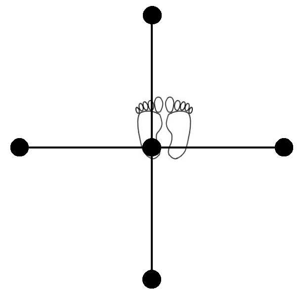

Shihō Nuki
* Alle standen in Kokutsu-dachi en alle stoten (tsuki) en trappen (geri) op chudan-hoogte, tenzij anders aangegeven.
1. Vanuit Heisoku-dachi rechtervoet verzetten naar uitgangspositie Heiko-dachi.
2. Naar rechts in Kiba-dachi met links Kagi-tsuki, met rechts Ushiro-empi-uchi.
3. Met rechtervoet naar links stappen in Kokutsu-dachi met Oi-tsuki, Ki-ai!.
4. Rechtervoet bijtrekken, lichaam 90° naar links draaien, rechtervoet naar achteren plaatsen.
Met rechts Ushiro-empi-uchi, met links Kagi-tsuki.
5. Op de plaats naar Zenkutsu-dachi, met rechts Kagi-tsuki.
6. Met rechts Mae-geri en vorderen, tegelijkertijd 180° over links draaien en dus met rechtervoet dus weer
achter (in Kokutsu-dachi), met rechts Ushiro-empi-uchi, met links Kagi-tsuki.
7. Op de plaats naar Zenkutsu-dachi, met rechts Nihon-Nukite naar rechts.
8. Naar rechts Mae-geri (rechtervoet), voet terugplaatsen in Kokutsu-dachi, met rechts Ushiro-empi-uchi,
met links Kagi-tsuki .
9. Vorderen met rechts Oi-tsuki, Ki-ai!.
10. Als 4 t/m 9.
11. Nogmaals 4 t/m 9.
12. Nu 4 t/m 6.
13. Op de plaats naar Kiba-dachi, linkerhand open en omlaag met handpalm naar beneden en rechtervuist boven je hoofd,
bovenkant van je hand naar je toe.
14. Met rechts Otoshi-empi-uchi op de vlakke hand, Ki-ai! (elleboog rust op de binnenkant van de handpalm)
15. Rechtervoet bijtrekken naar eindhouding Heisoku-dachi.
Terug naar Shihō-pagina